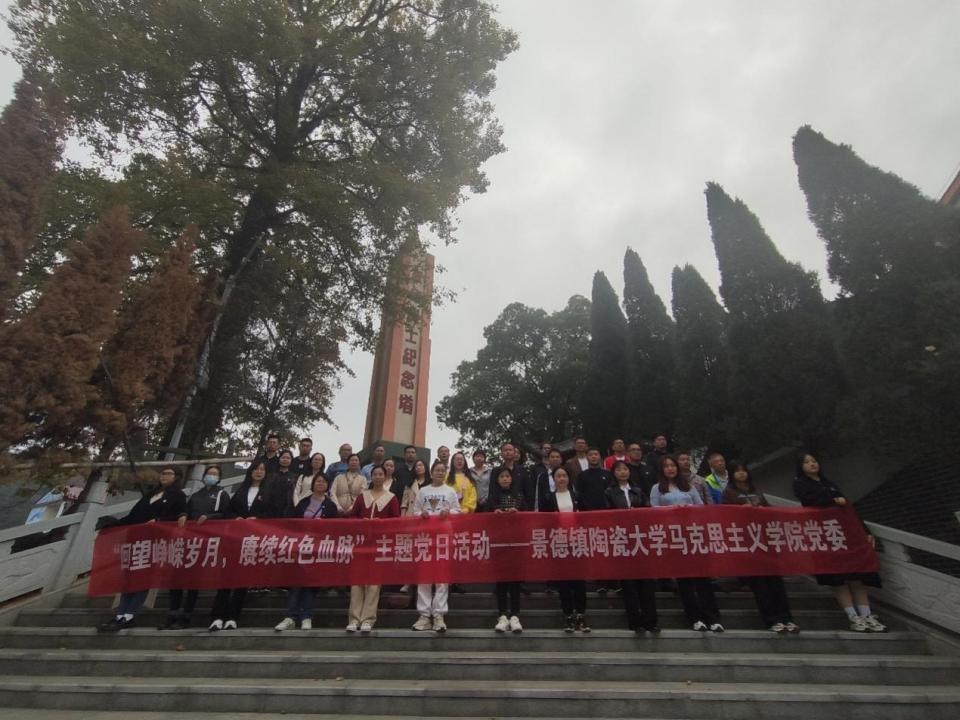
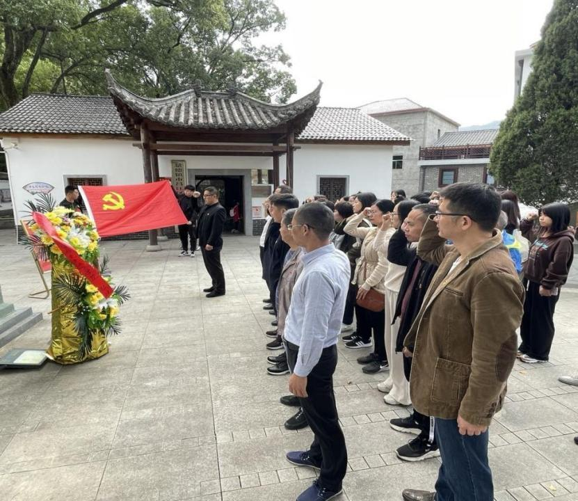
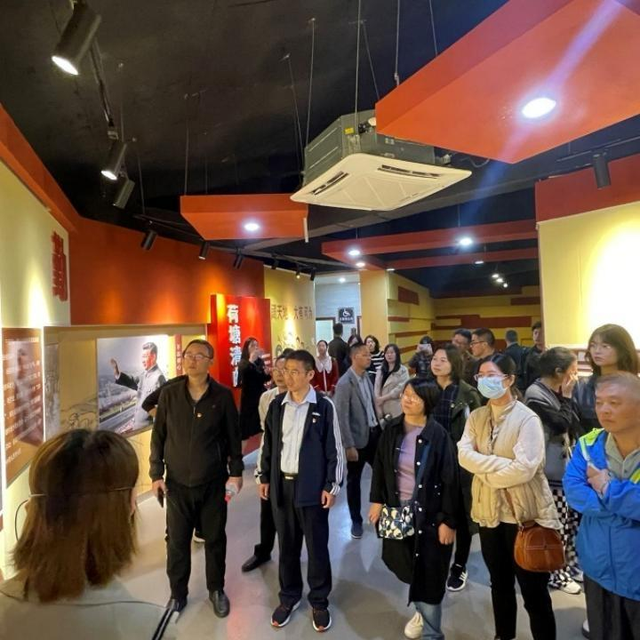
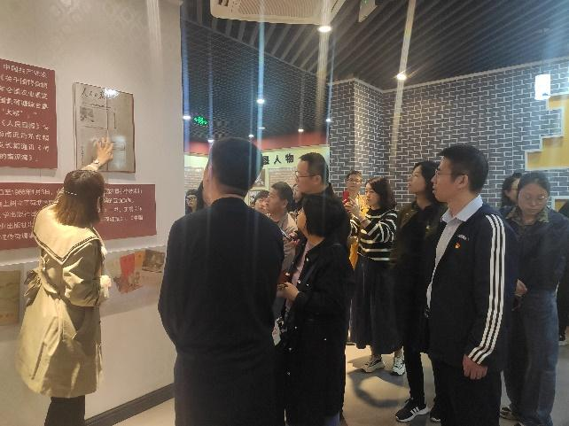
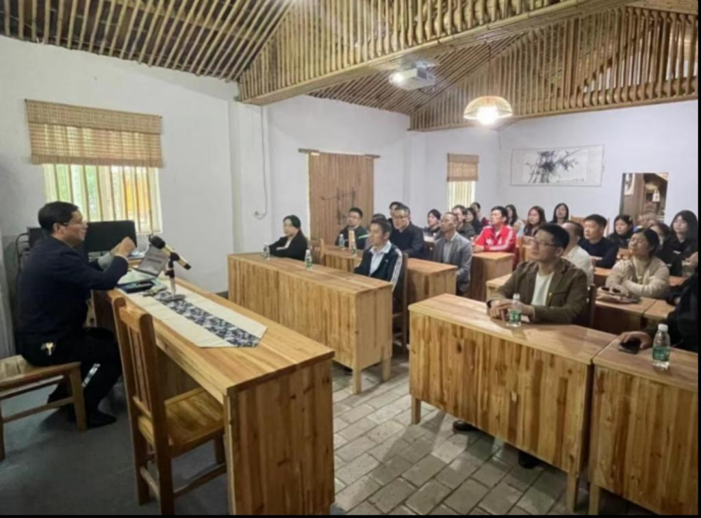
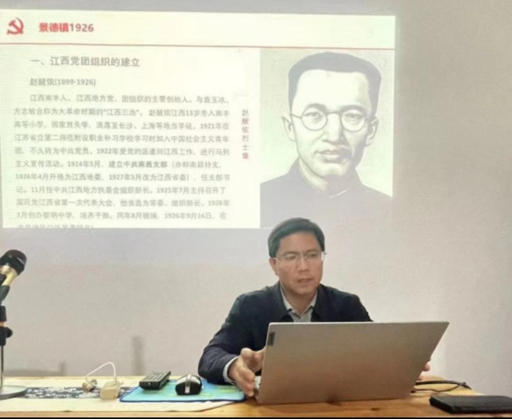
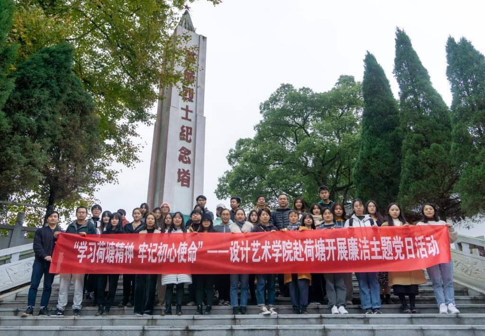
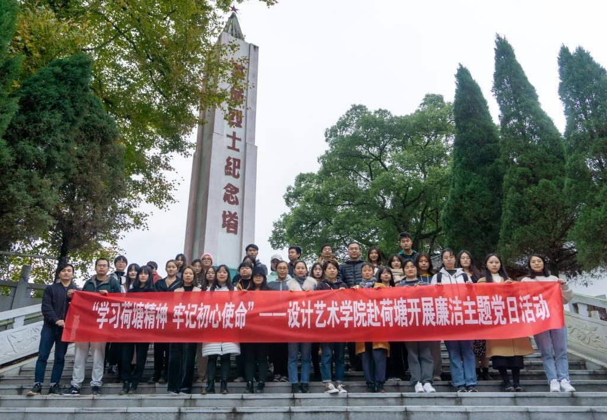
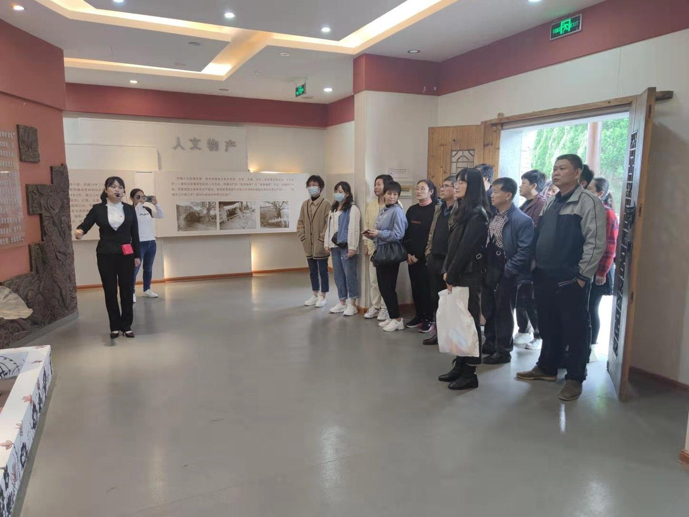
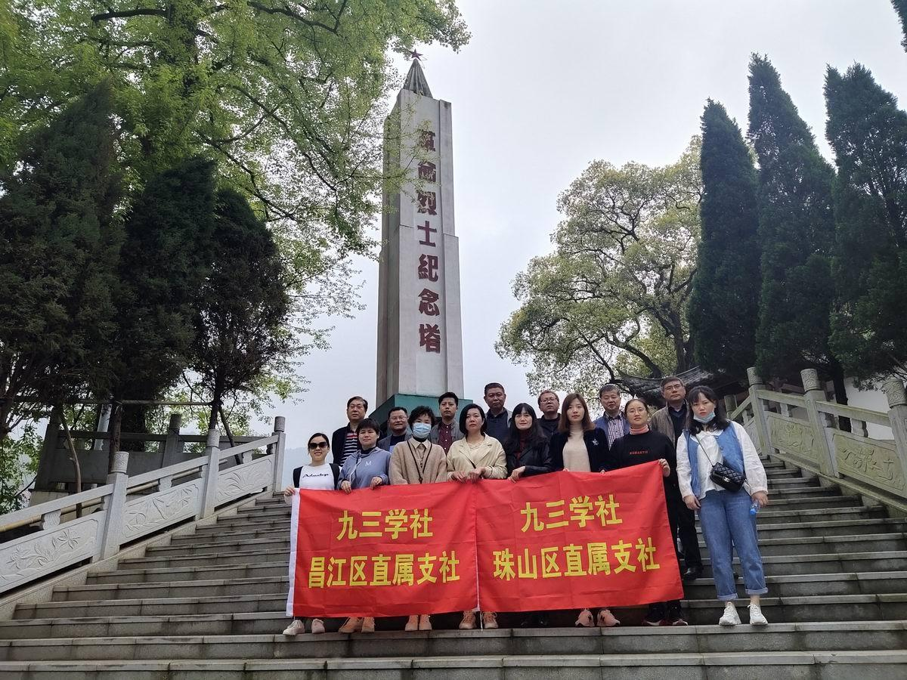

缅怀革命先烈：
 为深入学习贯彻党的二十大精神，开展党史学习教育，缅怀革命先烈，赓续红色血脉，11月13日，景德镇陶瓷大学马克思主义学院全体教师和研究生共70余人，前往昌江区荷塘乡红色教育基地开展“一线课堂”社会实践活动。 荷塘乡位于景德镇市南部，是富有红色基因的革命老区，有着“小井冈”的美誉。在荷塘革命烈士纪念塔前，师生们久久驻足凝视，共同瞻仰着凝聚60多年先烈历史的纪念塔。全体师生们怀着对革命先烈无比尊重的心情，向革命烈士敬献花篮，整齐列队静默肃立，鞠躬默哀，以此缅怀革命先烈的丰功伟绩。
参观展馆：
 随后，在荷塘乡廉洁文化教育展馆，通过优秀人物事迹、历史图片，文字记载，师生们了解到荷塘乡农垦创业史，深刻感悟荷塘人民在艰苦环境下垦荒创业的“南泥湾革命精神”。 走进放映厅，师生们共同观看《走进荷塘》纪录片，深切感受下放干部们在荷塘安家、造林、修路、办厂，立志改变山区面貌的决心，领悟 “自力更生，艰苦奋斗，勇于开拓”的荷塘精神。 参观完展馆后，跟随讲解员的步伐来到荷塘乡乡村振兴展馆。师生党员们了解到荷塘乡将打造荷塘农垦特色名片，发扬“实干垦干荷塘先干”的精神，师生们深深体会到新时代下的荷塘人民紧跟时代潮流，创新发展全乡产业，踔厉奋发担使命，勇毅前行新征程的决心。
上微党课：
 师生们辗转至殊源坞荷塘红色书院。通过院内陈列的荷塘精神研究文献以及历史文物，师生们再次重温了荷塘乡的光辉发展历程，了解荷塘人民发扬自力更生、艰苦奋斗、勇于开拓的革命精神，把昔日的穷山沟建设成社会主义新山区，光耀中华成为全国农垦系统的红旗单位。在殊源坞党史教育基地，由基地负责人洪东亮给师生们上一堂微党课《景德镇1926》，党员们认真学习了景德镇党小组的建立历史，对地方党史、景德镇的光荣革命史有了较全面的了解，深入探寻了党的初心使命。
廉洁宣誓活动：
 

为进一步加强党员教育，提高学院共产党员思想道德素质与党性修养，2020年11月22日设计艺术学院组织党员到景德镇荷塘乡红色基地开展廉政教育和爱国主义教育，重温革命先烈的廉洁思想和爱国情操。 通过参观红色历史展览馆、观看《荷塘精神》，学习了先烈的革命历程和光辉事迹，深切缅怀革命前辈在艰难岁月和艰苦条件下创造丰功佳绩的革命精神，思想上受到了深刻的教育和洗礼。 通过参观和学习，近距离感受荷塘精神的魅力。全体党员受到一次深刻的党性教育，进一步坚定了传承红色基因、弘扬荷塘精神，做合格党员、做廉洁干部的信念。
红色教育活动：
 为开展好“百年荣光〮照我前行”主题教育活动，3月28日上午，九三学社景德镇市珠山区、昌江区支社社员来到红色教育基地荷塘乡参观学习，缅怀革命先烈，传承荷塘精神。 社员们在讲解员的引导下，参观荷塘廉洁文化教育展馆，观看《走进荷塘》教育纪录片。馆内学习了革命先辈们追求理想、前赴后继不畏牺牲的奋斗初心，为社员们上了一堂生动的“荷塘精神”教育课。 社员们还来到革命烈士纪念塔前，敬献花圈，鞠躬默哀，表达对革命烈士的缅怀之情。 社员们纷纷表示，走进荷塘乡重温红色故事，继承先烈遗志、弘扬荷塘精神，要继续传承九三学社爱国、民主、科学的优良传统，不断增强对中国共产党和中国特色社会主义的政治认同、思想认同、理论认同、情感认同，要在各自的工作岗位上建功立业，积极履职，为我市打造对外文化交流新平台贡献自己的力量。